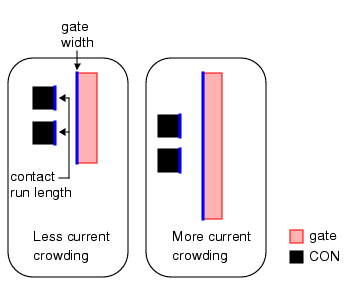

Verifying Contact Run Length for Current Crowding
You can quantify current crowding through a gate based on the run length of contacts on each side of the gate and identify gates that have the worst current crowding effects.
This rule uses the ratio of gate width to total contact run length. As this ratio increases, the current density around the contacts is likely to increase, causing an undesirable increase in the series resistance of the device. See Figure 1.
Figure 1. Contact Run Length Current Crowding

Try It!  |
Calibre Advanced DRC (eqDRC) Tutorial and Example Kit Go to this page on Support Center to download the complete eKit. This example is in the contact_via_checks/current_crowding_con_run_length example directory. |